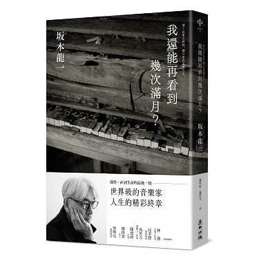

Author: 坂本龍一
我還能再看到幾次滿月？
Author: 坂本龍一
Translated by: 謝仲庭, 謝仲其
Publisher: 麥田
♯藝術千秋，人生朝露
「如果什麼都不做的話，壽命就只剩半年。」二○二○年十二月，坂本龍一發現癌細胞轉移時，醫師告訴他這句話。但是在那一天來臨前，他還有些話必須要說。無論是支撐著他創作活動與社會運動的哲學思想、對坂本家歷史與家族的感情，還有關於自己離去後的世界……
♯工作、思想回顧，親校參與的最後作品
二○二二年七月開始，由日本資深媒體人鈴木正文採訪坂本龍一，在日本文學刊物《新潮》開始主筆專欄。雜誌專欄以二○○九年出版的《音樂使人自由》續集為出發點，回顧這十多年來的人生經歷：與癌症共存、參與震災活動、對戰爭及核能的觀察，也講到旅行與創意，在工作上從能樂講到指揮，也有提到二○一九年來台灣參與活動、研究原住民音樂的所見所聞。
♯記錄生命最後一段日子的日記
坂本龍一曾說：「夏目漱石因為罹患胃潰瘍而死的時候也才四十九歲。相比之下，即使我在發現癌症時的二○一四年就以六十二歲身亡，也算是非常長壽……我所尊敬的音樂家們直到臨終前都持續寫著曲子。我希望能像敬愛的巴哈和德布西一樣創作音樂，直至最後一刻。」書末收錄鈴木正文代坂本龍一撰寫的後記，公開坂本龍一大量手寫、打字的最後隻字片語，都能感受得到其對音樂與生命的濃烈情感。